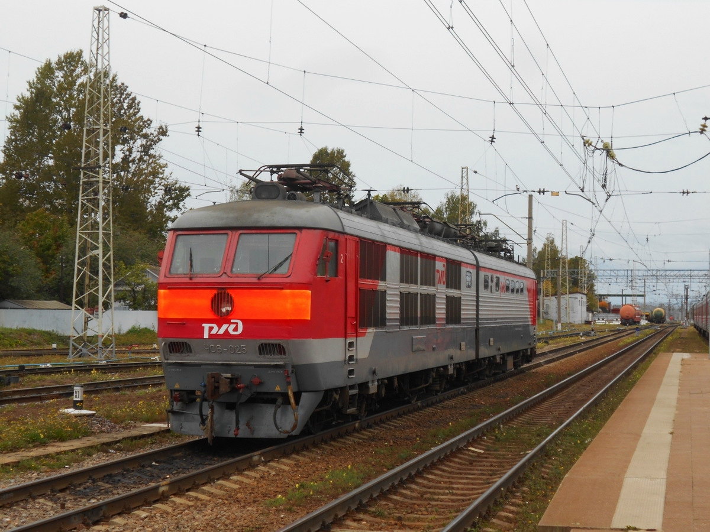

ЧС6-025
ЧС6-025 — пассажирский двухсекционный электровоз постоянного тока. Приписан к Октябрьской железной дороге, депо ТЧЭ-8 «Санкт-Петербург-Пассажирский-Московский».
С ноября 2024 года носит имя «Имени Андреева Владимира Михайловича».
0
год постройки
0
км/ч конструкционная
0
кВт мощность
Основные данные
| Завод-изготовитель | Škoda (Пльзень, Чехословакия) |
| Дата постройки | 23 сентября 1981 года |
| Дорога и депо приписки | Октябрьская железная дорога, ТЧЭ-8 «Санкт-Петербург-Пассажирский-Московский» |
| Статус | В эксплуатации |
| Именное название | «Имени Андреева Владимира Михайловича» (с ноября 2024 года) |
История и статус
23 сентября 1981
Постройка
Локомотив выпущен на заводе Škoda в Пльзене (Чехословакия).
1981 — наши дни
Эксплуатация
Работает на Октябрьской железной дороге, приписан к депо ТЧЭ-8 «Санкт-Петербург-Пассажирский-Московский».
Ноябрь 2024
Именное название
Локомотиву присвоено имя «Имени Андреева Владимира Михайловича».
Характеристики серии ЧС6
| Параметр | Значение |
|---|---|
| Род тока | Постоянный, 3 кВ |
| Осевая формула | 2(20-20) |
| Ширина колеи | 1520 мм |
| Часовая мощность ТЭД | 8 × 1050 кВт |
| Длительная мощность ТЭД | 8 × 1000 кВт |
| Конструкционная скорость | 190 км/ч |
| Эксплуатационная скорость | 160 км/ч |
Фотогалерея

ЧС6-025 «Имени Андреева Владимира Михайловича»
📸 pfandrom

ЧС6-025 в расцветке обычной расцветке "РЖД"
📸 ЛВС-86К 8181(Твой Транспорт)